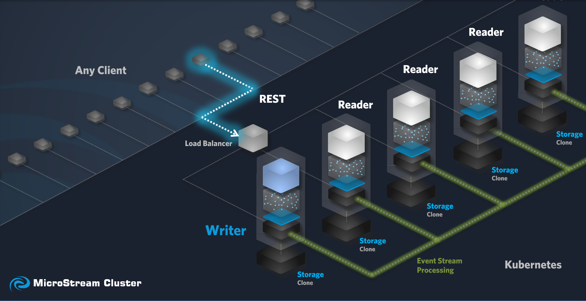
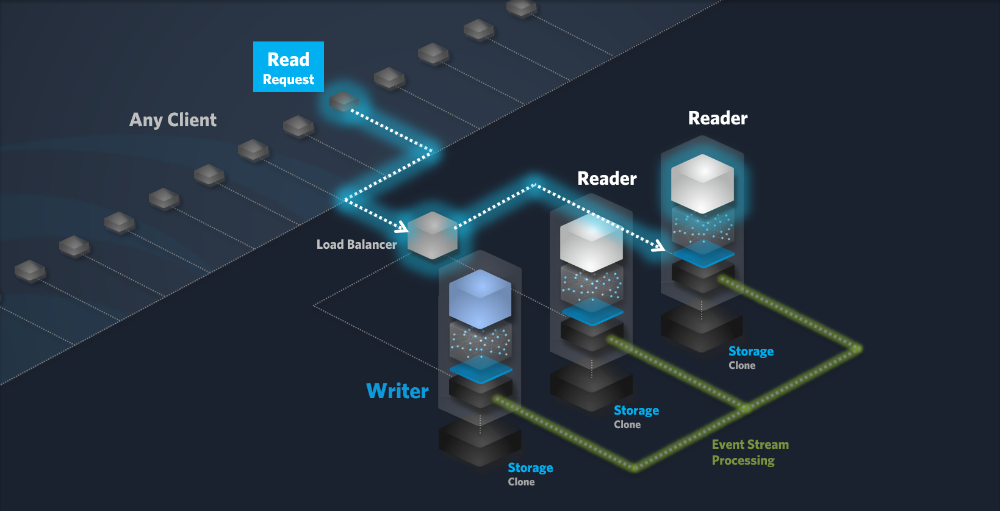
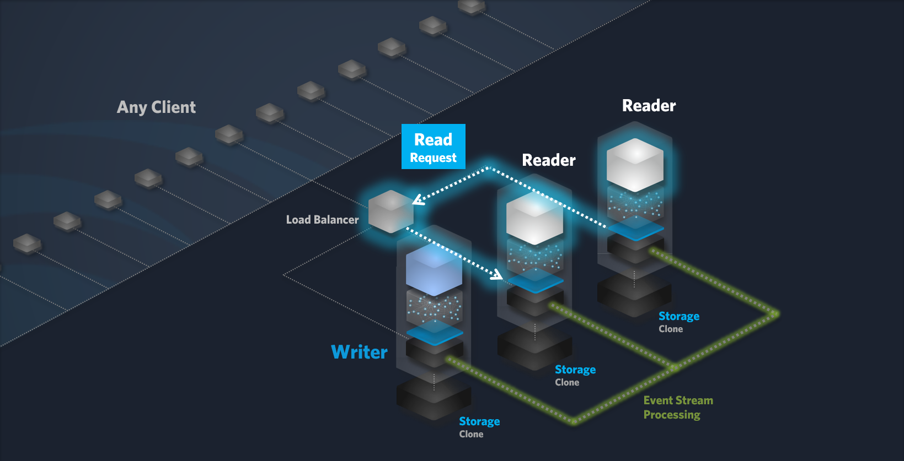
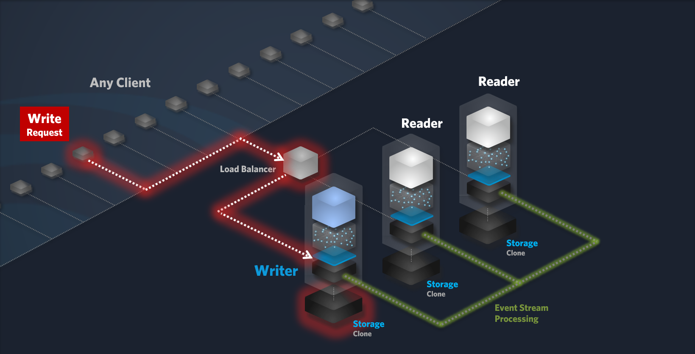
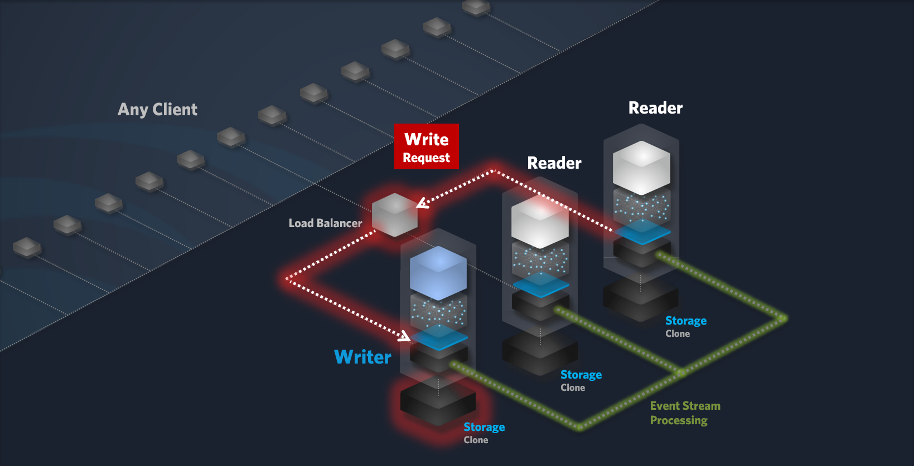
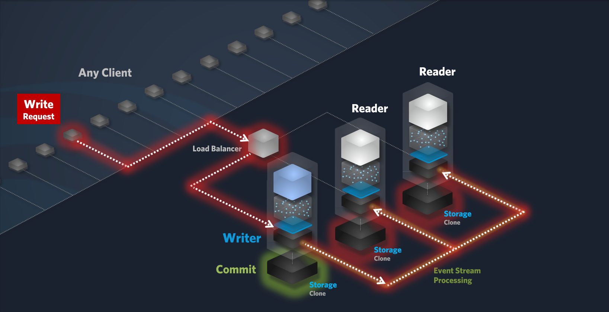
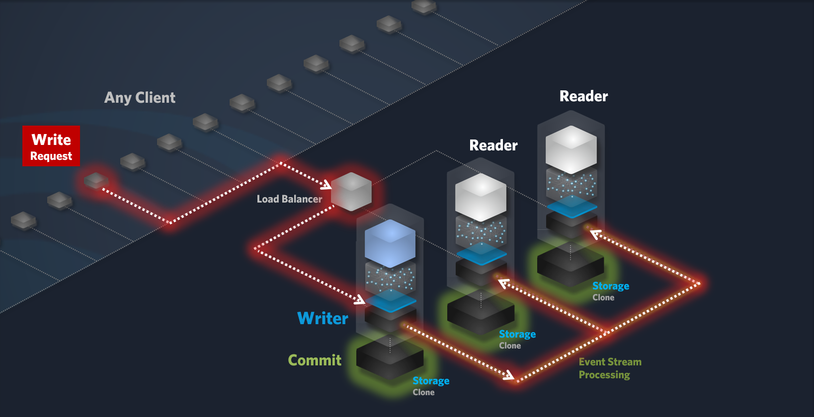
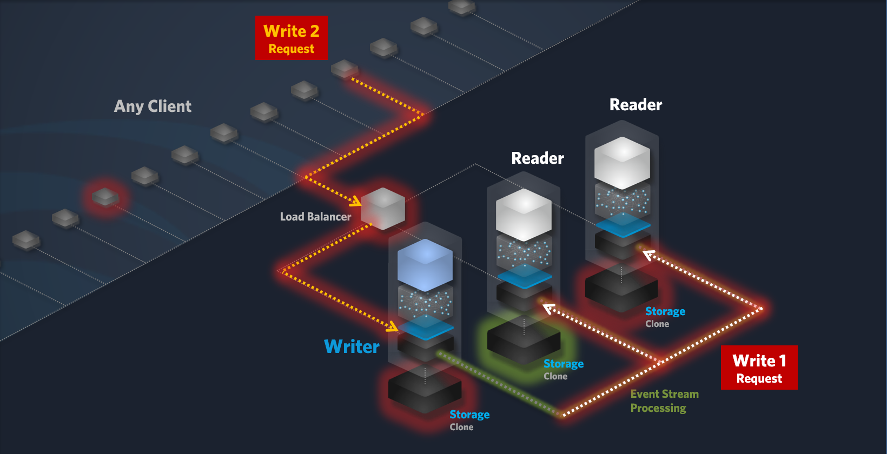

How does a Cluster in Eclipse Data Grid work?
Your Project
Your project acts as the entrypoint for your cluster. It needs to contain REST-Endpoints for getting data and storing data. After ClusterStorageManager.store(Object) is called, the storage nodes will synchronize themselves, making the stored data available on all the nodes. For more information on how your project should look, you can check out the Starter Templates
The Storage Nodes
Single Writer Architecture
Eclipse Data Grid employs a single-writer architecture, where a dedicated Writer node is responsible for handling all write operations. This design offers several advantages:
Benefits of Single-Writer Architecture:
-
Simplified Consistency: The single-writer approach ensures strong consistency, as only one node can modify data at a time. This eliminates the complexities of distributed consensus algorithms and simplifies data management.
-
Optimized Write Performance: By centralizing write operations to a single node, the cluster can achieve high write throughput and low latency. The Writer node can be optimized for write performance, including hardware and software configurations.
-
Efficient Replication: The Writer node replicates data to Reader nodes through an efficient event stream mechanism. This ensures data consistency across all nodes and minimizes the impact of node failures.
-
Simplified Failure Recovery: In the event of a Writer node failure, the cluster can seamlessly elect a new Writer node from among the existing Reader nodes. This ensures minimal downtime and maintains the overall system’s availability.
By adopting this architecture, Eclipse Data Grid provides a reliable, scalable, and high-performance platform for data-intensive applications.

Reader Node
Reader nodes are dedicated to handling read requests. They efficiently retrieve object references from storage (if not already cached in memory) and deliver the data to the requesting client. By default, GET, TRACE, OPTIONS, CONNECT and HEAD requests are considered read requests. This can be changed within the settings of your Cluster.
Read Request Workflow:
-
Client Request: A client sends a read request to the Cluster.
-
Load Balancing: The load balancer forwards the request to a suitable Reader node.
-
Request Processing:
-
The Reader node receives the read request.
-
The node retrieves the required data from storage, either directly or from the cache.
-
-
Response: The Reader node sends the requested data or search results back to the client.
If the request includes search criteria, we’d recommend leveraging the Java Streams API to efficently filter, sort, or perform other operations as needed. For large datasets, the GigaMap may also be used.


Writer Node
The Writer node is responsible for processing write requests. It ensures data durability and consistency by storing data locally and replicating it to Reader nodes. By default, PUT, POST, DELETE and PATCH requests are considered write requests. This can be changed within the settings of your cluster.
Write Request Workflow:
-
Write Request: A client or your application sends a Write request to the cluster.
-
Load Balancing: The load balancer forwards the request to the Writer node.
-
Data Persistence and Replication:
-
Local Storage: The Writer node stores the data in its local storage using an atomic, all-or-nothing operation to guarantee data integrity.
-
Event Stream: The write request is appended to an event stream, ensuring durability and providing a reliable source for replication.
-
Commit: Once the data is successfully persisted in both, the local storage and the event stream, the write operation is committed.
-
-
Replication to Reader Nodes:
-
Event Stream Consumption: Reader nodes consume the write events from the event stream.
-
Local Storage Update: Each Reader node updates its local object graph and persists the data in its local storage using an atomic, all-or-nothing operation.
-
Commit: Once the data is successfully persisted locally, the Reader node commits the write operation.
-





Writer/Reader Node
To optimize performance, especially under heavy write loads, the Load Balancer is configured by default to route Read requests to dedicated Reader nodes and Write requests to the dedicatedWriter node. This configuration minimizes latency and maximizes throughput. However, a Writer node can be configured to handle both Read and Write requests, providing flexibility and efficient resource utilization. When the Write load is low, the Writer node can also process Read requests, further optimizing overall system performance.
Writer Proxy Node
Clusters includes a Writer proxy node, which is a dedicated Java process running between the Load Balancer and the Writer node. The Writer Proxy is responsible for forwarding Write requests to the dedicated Writer node.
Clients and Communication
Clusters can be accessed by any external application or service (clients), including desktop, web, mobile or IoT devices, as long as they can send REST requests to the cluster. This also includes any node of your clustered application. By default, REST requests of the type PUT, POST, DELETE and PATCH are forwarded to the elected Writer node, although this behaviour can be modified in your cluster settings.
Consistency in Eclipse Data Grid
While Eclipse Data Grid employs a single-writer architecture to ensure strong consistency for write operations, the overall standard consistency model of the cluster is eventual consistency. This means that while data is eventually replicated across all nodes, there might be a delay between the time a write operation is committed on the Writer node and the time it’s reflected on all Reader nodes.
Eventual Consistency:
Eventual consistency is a common strategy in distributed systems, especially those that prioritize high availability and scalability. It’s particularly well-suited for use cases where:
-
High Availability: Ensuring that the system remains available even in the face of network partitions or node failures.
-
Scalability: Allowing the system to scale horizontally to handle increasing workloads.
-
Reduced Latency: Avoiding the performance overhead of strong consistency, especially for large-scale systems.
Common Use Cases:
-
Content Delivery Networks (CDNs): Ensuring that content is replicated across multiple servers for faster delivery.
-
Distributed Databases: Replicating data across multiple data centers for redundancy and disaster recovery.
-
Microservices Architectures: Coordinating data updates across multiple services.
-
Real-time Analytics: Processing large volumes of data in real-time, even if there are slight delays in data consistency.
By adopting eventual consistency, Eclipse Data Grid balances data consistency with system performance and availability, making it a suitable choice for a wide range of applications.
Strong Consistency:
While Eclipse Data Grid primarily operates on an eventual consistency model, it provides flexibility to implement stronger consistency guarantees for specific use cases. By understanding the trade-offs between consistency, availability, and partition tolerance (the CAP theorem), you can tailor the cluster’s behavior to meet your application’s unique requirements.
Strong consistency ensures that a read always returns the most recent write. However, achieving strong consistency in a distributed system can be challenging and often involves significant overhead. There are various approaches to strong consistency, each with its own trade-offs:
-
Two-Phase Commit (2PC): A classic protocol that requires coordination between multiple nodes to ensure atomic commits. While it provides strong consistency, it can be complex and prone to performance issues.
-
Paxos: A consensus algorithm that can be used to achieve strong consistency, but it’s complex to implement and may introduce significant latency.
-
Raft: A more recent consensus algorithm that is simpler to implement than Paxos and offers better performance. However, it still requires coordination between multiple nodes.
The choice of a strong consistency model depends on the specific requirements of your application. Factors such as the level of consistency needed, the desired performance, and the tolerance for failures should be carefully considered.
By offering a flexible approach to consistency, Eclipse Data Grid empowers you to balance the needs of your application with the complexities of distributed systems. You can choose to leverage the simplicity and scalability of eventual consistency for most use cases while implementing stronger consistency guarantees for critical data or operations.
Customizing Service
Eclipse Data Grid provides a flexible foundation for building scalable and reliable distributed applications. While the default behavior is eventual consistency, we offer consulting and customization services to help you achieve the optimal level of consistency for your specific use case. Whether you need strong consistency for critical data or the flexibility of eventual consistency for general-purpose workloads, our experts can work with you to design and implement the best solution.
Kubernetes as the Foundation
Eclipse Data Grid runs on Kubernetes. If you run a Eclipse Data Grid On-Premises, you’ll need first of all a Kubernetes environment. Kubernetes is a sophisticated platform that manages and orchestrates containerized applications. It ensures that your Eclipse Data Grid components are always running, healthy, and scaled appropriately.
How it Works:
-
Containerization: Your Eclipse Data Grid application is packaged into a container, a standardized unit of software that includes everything it needs to run: code, libraries, and configurations.
-
Kubernetes Deployment: Kubernetes takes these containers and deploys them across multiple nodes (physical or virtual machines) in your cluster.
-
Cluster Management: Kubernetes handles tasks like:
-
Scheduling: Assigning containers to available nodes.
-
Scaling: Automatically adding or removing containers based on workload.
-
Self-Healing: Restarting failed containers and replacing faulty nodes.
-
Load Balancing: Distributing traffic evenly across multiple instances of your application.
-
By leveraging Kubernetes, you can ensure the high availability, scalability, and efficient management of your Eclipse Data Grid.
Load Balancer
Eclipse Data Grid leverages the underlying platform’s Load Balancer (nginx) (e.g., AWS) to strictly separate read and write requests.
Read Requests:
-
Distributed across multiple Reader nodes for optimal performance and scalability.
-
The Load Balancer directs read requests to the most suitable Reader node based on factors like load and availability.
Write Requests:
-
All write requests are ultimately processed by a dedicated Writer node.
Load Balancer Requirements:
-
To ensure optimal performance and reliability of your Eclipse Data Grid On-Premises, it’s crucial to employ a highly available load balancer. This guarantees seamless distribution of traffic across multiple nodes, minimizing downtime and maximizing system responsiveness.
Troubleshooting
Reader node crashes
-
If a Reader node fails, the Load Balancer will automatically route incoming read requests to other available Reader nodes. Additionally, the system will initiate the process of starting a new Reader node to replace the failed one, ensuring uninterrupted service.
Writer node crashes
-
If the Writer node becomes unavailable, the system automatically elects a new Writer node from among the existing Reader nodes. Any write operations that cannot be processed immediately due to this transition will result in an exception being thrown. Additionally, the system will initiate the process of starting a new Reader node to replace the failed one, ensuring uninterrupted service.